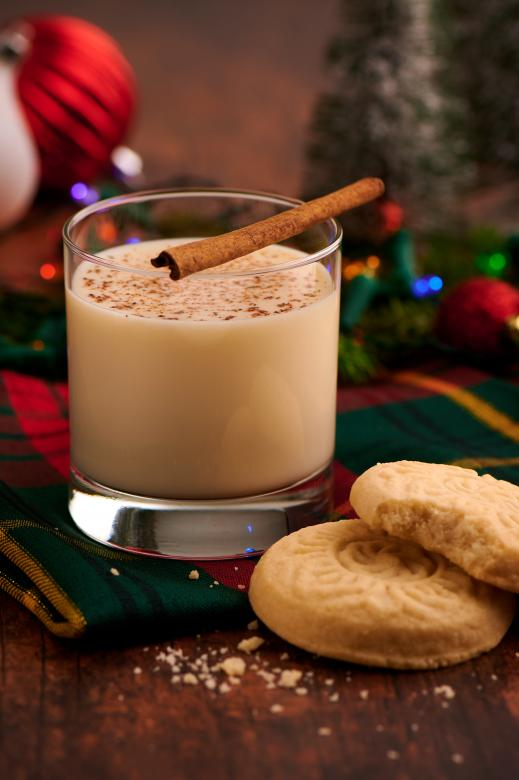

Christmastime reminds me of the annual party my grandparents used to have, Nog Night. It was an intracate ordeal, with custom ornaments passed out as invitations, with many neighbors treating it as the event of the year. The centerpiece was always a vat of my great-grandma's Nog, with enough made to last well into January. This recipe is deceptive, the flavors cover up enough of the alcohol that you'll want to keep going back for more until you're physically unable to.